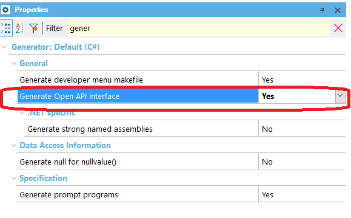
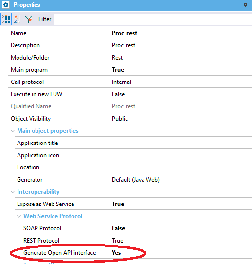

Declare whether the Rest web services in GeneXus will have their Open API documentation in a file called default.yaml, located under the application directory.
The property is available at Generator, at object level and environment level. Values
Description
Property at Generator level (the default value is: No) :  Property at object level (the default value is: Use Environment property value) :  The default.yaml file is updated when any of these objects is generated:
How to apply changesTo apply changes made by this property, do a Re-Build All. Scope Objects: Business Component, Data Provider, Procedure See Also
Documenting RestFul services |
| Backlinks | |
| Documenting RestFul services | Expose as Procedure's Web Service property |
| OpenAPI import tool |